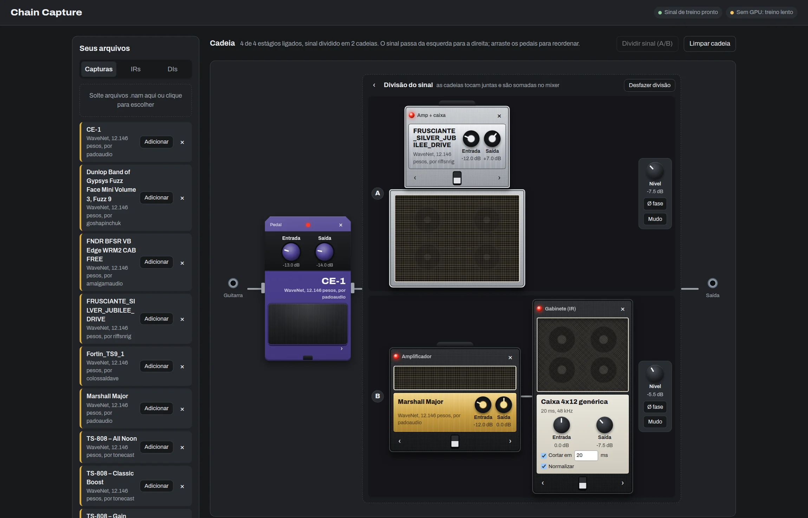

NAM Chain Capture
Algumas pedaleiras só aceitam um bloco NAM por preset. Este app recebe várias capturas, encadeia em série e treina uma única captura que reproduz a cadeia inteira.

Toque na imagem para ampliar.
Uma cadeia que montei: o pedal CE-1 e depois o sinal dividido em dois amplificadores, A e B.